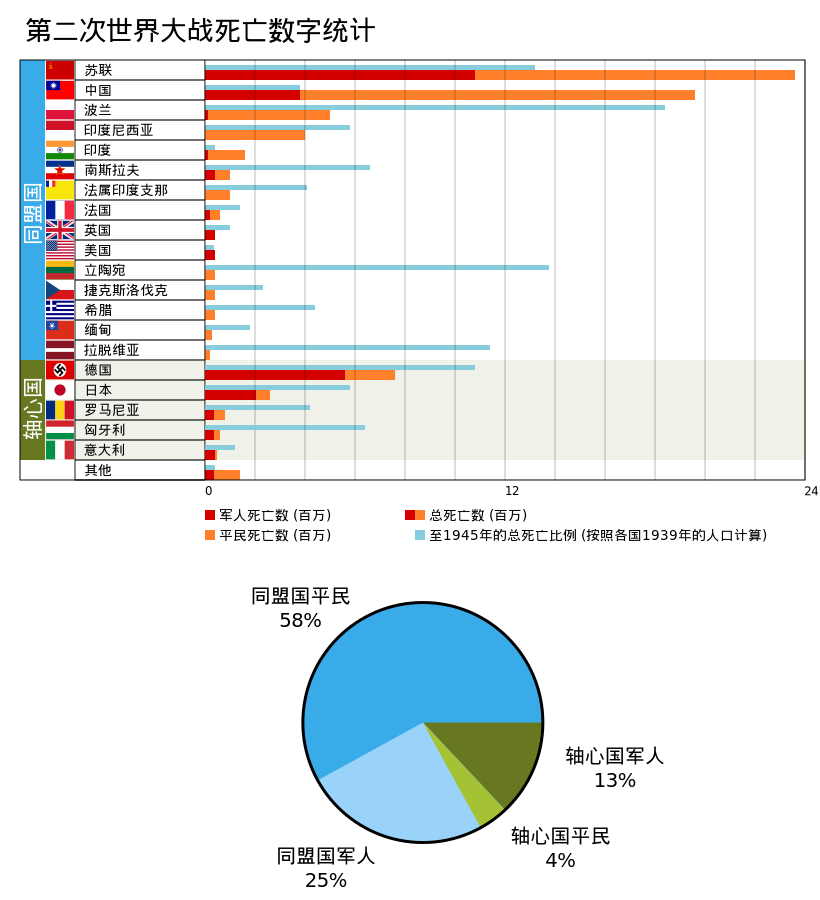
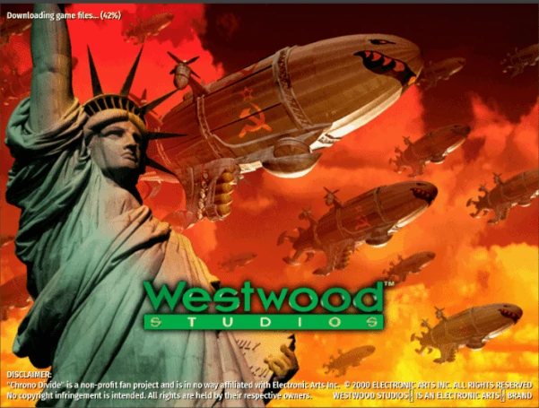

紫 日

基本信息
警告：
以下文字涉及剧情描述，不建议在观影前阅读。
这是冯小宁导演战争与和平三部曲1的最后一部，前面两部分别是《红河谷》（1997）与《黄河绝恋》（1999）。而这前两部影片的主角，恰好都有演员 宁静和美国演员保罗·克塞，他们还因戏结缘最终产生了一段跨国婚姻。在冯导的战争片叙事里，一般都有更宏大的视角，是从全人类共同体这个角度来解读对于战争的思考。在本片中，就有俄罗斯和日本的青年演员加入，重现基于当年历史背景的战争故事。直接描述战争的惨烈似乎并不是冯导的风格，于是就有了几个小人物，和他们相关的回忆。
他们从彼此间的仇视与沟通困难到后来慢慢建立信任以及互相帮助，一同走过茫茫林海，他们共同经历过生与死、爱与恨，直至战争的结束。你可以把影片粗略地分为两段，前一段是杨玉福的回忆，后一段是娜佳的回忆，两段回忆共同拼凑起整个故事。如果秋叶子还活着，那其中必定还有一段是属于她的记忆。
三个代表
我们可以从影片或者一些史料中得知，二战进入到最后阶段，从日苏两方来看，双方都已经严重兵源不足了。苏联红军虽然在欧洲战场获得了同纳粹德国的最后胜利，但是同时也伤亡惨重，此时成年男性都战死得差不多了，因此年轻女性也被征派上战场。穷途末路的日本更是将未成年的学生征调到太平洋战场上，企图最后一搏。秋叶子的恋人大西和他们的同学们便是这样穿上了军装。在战争中，每个个体都是渺小的，说不定下一秒就会在炮火中死去。编剧截取了三个不同国籍的代表人物分别代表不同的社会阶级，分别是农民、士兵与学生。
虽然他们来自不同的国家，有着不同的文化差异，但是他们都有共同的地方——那就是他们的人生彻底被战争所毁掉了。杨被侵略者弄得亲人惨死，流离失所，还差点死在集中营；而娜佳的亲人在敌机的轰炸中死去；秋叶子小小的年纪被迫走上侵略他国的战场，去承受这个年纪不应承受的东西。提及这段历史，总是让我想起童年的噩梦——那部臭名昭著的《黑太阳731》，这是为数不多的我看过一遍之后再也不想看也很难有勇气看的电影，也许我就根本不该去看。其中人体真空和毒气实验、烫伤冻伤、活体器官解剖等，很难让人理解这是人类能够做出的行为。那些做出有悖伦理之事的人真的还能够称之为人吗？恐怕是不能了。
如果说近代之前的战争，需要士兵用血肉之躯直面战争的残酷与罪恶，那么现代战争的特点无疑就是让人降低了许多罪恶感。许多先进的现代化武器，自动化远程攻击的能力远超普通人认知。在某些军事实力不对等的战争中，不难想像出这样场景：某基地M国空军接到上级指令，从某个亚太基地起飞，几小时后抵达战场区域上空，飞行员只需输入预定的座标参数，按下按钮，导弹自动飞出随后精准击中目标（其精准程度不亚于落在某国驻南联盟大使馆旁的那一枚）。飞机过境之处，化作一片焦土。此时作战人员眼前只是一片晴空，无需再直面战场，与那些在烈火中哀嚎的平民妇女儿童，以及四处零落的血肉模糊的人类肢体。更何况他们还有远距离射程的导弹和洲际导弹，而地面部队的扫荡是最后的流程。完成任务后全体编队返回，运气好的话还能飞回本土过个周末。
秋叶子的死，向我们再现了《中国1945之重庆风云》剧中所提及的细节。一些日本下级军官在天皇颁布投降诏书后，拒不相信与承认日本已经战败的事实，仍然负隅顽抗，拒绝投降（这其中也有来自国民政府的授意），同时拉上了无辜民众为军国主义殉道。这是法西斯最后的狂欢，也是军国主义的末路。出演这部影片的人们始终是幸运的，他们不用再次经历那场战争，不必以生命为代价去体验那段历史。
正如在社会主义国家有研究资本主义的群体一样，在资本主义的国家里同样也有研究社会主义及共产主义的一群人。让人感到欣慰的是，在发起战争的国家里依然有许多的人反战，这个世界依然有那么多爱好和平的人，正是因为他们的存在，才不至于将这个世界再次拖入战争的泥潭。任何热爱和平的日本青年与世界青年们都应该团结起来，为防止军国主义的恶灵以及法西斯再次重生，而贡献出自己的一份力量。

二战死亡统计数字（图片）
从战争中学到了什么？
自从人类诞生，其实大大小小战争就没断过，从个体之间的单打独斗，到部族之间的群体性斗殴，再到国与国之间的利益冲突。经过漫长岁月的进化，人类才获得了那点神性。一场战争打下来，又回归了像祖先们一般的兽性。影响世界格局的战争，有两场，就是一战和二战。我并不认为我们从战争中学到了什么，当经历过战争的那一代人逐渐老去并离开这个世界，生长在以和平为主旋律年代的年轻人们逐渐遗忘了那段历史，曾经的伤痛结痂，长出了新肉，似乎就好像没发生过了 。当然，最可怕的还不是看得见的战争。这场生存保卫战，或是说走向富贵的战争让一些人重新返祖，走进丛林，并拾起那套弱肉强食进化论法则。所以说，看不见硝烟的战争才最可怕。
战争结束了，但是这世界从未停止纷争。
每当夕阳西下，那笼罩晴空的血色残阳，便是人类世界永远的红色警戒。

扩展阅读